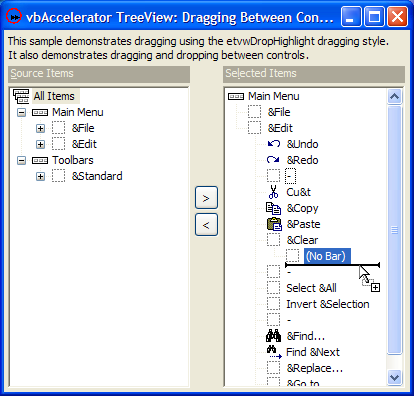

VB5 TreeView Drag Drop Samples (71K)
VB5 TreeView Drag Drop Samples (71K)
 VB6 TreeView Drag Drop Samples (68K)
VB6 TreeView Drag Drop Samples (68K)
 16 Apr 2004
16 Apr 2004
First Posted
 vbAccelerator TreeView Control
vbAccelerator TreeView Control
 vbAccelerator ImageList Control and Class v2.0
vbAccelerator ImageList Control and Class v2.0

Drag Drop and the vbAccelerator TreeView Control
One of the main design aims behind the vbAccelerator TreeView control was to enable more configurable and managable drag-drop operations to be performed. This article describes how to use the drag-drop features in two simple sample projects.
Drag Drop Styles in the TreeView Control
In the February 2004 release of the TreeView control, the style of drag-dropping has been made configurable. This allows you to choose between two different styles:
- etvwInsertMark
The default drag drop mode shows an insert mark at the point you are going to place the node you are dragging. This lets you either re-order nodes within a tree or change their parent, and hence is useful in applications where the order of items is important. - etvwDropHighlight
Drop-highlighting nodes is a more familiar drag-drop mode which is used in the Folder pane in Explorer. This mode allows you to change the parent of an item but not to change the order of the items within a branch. This makes more sense for applications in which the information has no natural order, or a particular order needs to be enforced.
The download provides two samples which demonstrate how to use the drag-drop features. The first populates the a single Tree with folders and allows you to drag folders around (without actually affecting the disk). The second is a more sophisticated sample demonstrating how you might use insert dragging to build toolbars and menus which also shows dragging between controls. The samples are run from a disgraceful "spirit of '97 MS Access" switchboard form, for which I apologise. In the rest of this article I'll first provide an overview of the things you need to do to perform drag-drop and then a quick look at the samples.
Doing DragDrop
1. Getting Started
Before any drag-drop operations will occur with the vbAccelerator TreeView control, there are a handful of things you should configure (these can all be configured from the Properties Window of the control):
- Set the OLEDropMode of the control to 1 (vbOLEDropManual). Also, note that whilst Automatic drag and drop modes appear to be supported, they aren't really. Why this is the case is a long but uncomplicated story involving vodka so please just accept that you need to do it.
- Set DragAutoExpand to True if you want collapsed nodes to automatically open as you drag over them.
- Set the DragStyle as described in the previous section.
Once that's done the control will start offering drag-drop features. Well, almost. Before you can actually drag anything, you need to give the control licence to start a dragging operation by responding to the OLEStartDrag event and setting the AllowedEffects parameter. The following code example demonstrates how you can configure whether dragging is allowed or not on a node-by-node basis:
Private Sub tvwDrag_OLEStartDrag(Data As DataObject, AllowedEffects As Long)
'
' Check if this is a root node:
Dim nodDrag As cTreeViewNode
Set nodDrag = tvwDrag.NodeFromDragData(Data)
If (nodDrag.Parent Is Nothing) Then
' Cannot drag parent items
AllowedEffects = vbDropEffectNone
Else
AllowedEffects = vbDropEffectMove
End If
'
End Sub
2. Controlling Drag Drop
There are three functions and two events you need to use to control a drag-drop operation. The first thing to understand is that during a drag-drop operation the control places two things into the OLE Data object associated with the drag-drop:
- The Text of the node being dragged.
- A private data format containing information allowing any TreeView control to determine which node is being dragged, and which control it was sourced from.
Whenever a node is being dragged, you can use the control's NodeFromDragData function to get a cTreeViewNode object. This affords control based on the node being dragged. To also determine where the target of the drag operation is, use the DragInsertNode function to get the node, and then if you are using the etvwInsertMark drag style the DragInsertAbove function to determine whether to insert above or below the selected node.
Now that you can determine what's being dragged and where the user proposes to drag it to, you can start building logic to control the drag operation.
- To conditionally enable/disable a drop, use the OLEDragOver event and set the AllowedEffects to tell the control what can be done. (AllowedEffects can be set to one of the OLEDropEffectConstants provided in VB).
- When an item is actually dropped, the DragDropRequest event is fired (this is actually just an enhanced version of the OLEDragDrop event which provides some more detail about the target node). This event provides the Data object containing the OLEDrag data, the target node, whether to drop above or below and extended information about the exact location of the target on the node.
Dragging and Dropping Folders
The internal drag drop sample uses the code from the Shell samples also in this section to populate a TreeView with file system folders. Adding drag capability involves three things:
- Preventing dragging of items which can't be moved (the root items in the folder tree).
- Validating the drag location of the folder to prevent it from being made a child of itself or an illegal location.
- Actually moving the item when it is dropped.
The first point is covered during the OLEStartDrag event, which simply checks whether the item is a root node using the Parent property of the dragging node:
Private Sub tvwDrag_OLEStartDrag(Data As DataObject, AllowedEffects As Long)
'
' Check if this is a root node:
Dim nodDrag As cTreeViewNode
Set nodDrag = tvwDrag.NodeFromDragData(Data)
If (nodDrag.Parent Is Nothing) Then
' Cannot drag parent items
AllowedEffects = vbDropEffectNone
Else
AllowedEffects = vbDropEffectMove
End If
'
End Sub
The second is handled by creating a drag location verification function and calling it during the OLEDragOver event:
Private Sub tvwDrag_OLEDragOver( _
Data As DataObject, _
Effect As Long, _
Button As Integer, _
Shift As Integer, _
x As Single, y As Single, _
State As Integer)
' Check if we're attempting to make something a child of
' itself:
Dim nodDrag As cTreeViewNode
Dim bOk As Boolean
bOk = False
' Get drag node:
Set nodDrag = tvwDrag.NodeFromDragData(Data)
If Not (nodDrag Is Nothing) Then ' It isn't a treeview node
' Get drag insert point
Dim nodInsert As cTreeViewNode
Set nodInsert = tvwDrag.DragInsertNode()
If Not (nodInsert Is Nothing) Then ' there is no current insert point
bOk = validateDragLocation(nodDrag, nodInsert)
End If
End If
Effect = IIf(bOk, vbDropEffectMove, vbDropEffectNone)
End Sub
Since the shell TreeView stores the path of the item within the item's Key this can be used to validate the drag location. As noted in the shell samples, the same path can appear at more than one point in the tree, and hence to use it as a key it needs to have some additional information added to it to make it unique. In this case, I used a counter which is prepended to the path with a colon, the path can then be extracted from the data after that:
Private Function validateDragLocation( _
nodDrag As cTreeViewNode, _
nodInsert As cTreeViewNode _
) As Boolean
' only ok if nodDrag's path is not a wholly
' contained child of nodInsert
Dim sPathDrag As String
Dim sPathInsert As String
Dim iPos As Long
Dim bOk As Boolean
sPathDrag = nodDrag.Key
iPos = InStr(sPathDrag, ":")
sPathDrag = Mid(sPathDrag, iPos + 1)
sPathInsert = nodInsert.Key
iPos = InStr(sPathInsert, ":")
sPathInsert = Mid(sPathInsert, iPos + 1)
bOk = Not (InStr(sPathInsert, sPathDrag) = 1)
validateDragLocation = bOk
End Function
The final aspect is handled in the DragDropRequest event. This performs an additional check for the validity of the drop location which could have changed since the last OLEDragOver event. If still ok, it asks for confirmation about the move, deletes the old item and then adds a new one as a child of the node dragged over. Since the tree's children nodes are sorted, it automatically gets added in the right location:
Private Sub tvwDrag_DragDropRequest( _
Data As DataObject, _
nodeOver As vbalTreeViewLib.cTreeViewNode, _
ByVal bAbove As Boolean, _
ByVal hitTest As Long)
'
' Check if we're attempting to make something a child of
' itself:
Dim nodDrag As cTreeViewNode
Dim nodParent As cTreeViewNode
Set nodDrag = tvwDrag.NodeFromDragData(Data)
If Not (nodDrag Is Nothing) Then ' not a treeview node
If validateDragLocation(nodDrag, nodeOver) Then
Dim sPathFrom As String
Dim sPathTo As String
Dim iPos As Long
Dim sText As String
Dim sNewKey As String
Dim sOldKey As String
Dim sOldPath As String
sPathFrom = nodDrag.Key
iPos = InStr(sPathFrom, ":")
sPathFrom = Mid(sPathFrom, iPos + 1)
sPathTo = nodeOver.Key
iPos = InStr(sPathTo, ":")
sPathTo = Mid(sPathTo, iPos + 1)
If (Right(sPathTo, 1) <> "\") Then sPathTo = sPathTo & "\"
sPathTo = sPathTo & nodDrag.Text
Dim sQuestion As String
sQuestion = "Are you sure you want to move the folder " & vbCrLf _
& nodDrag.Text & " (" & sPathFrom & ") " & vbCrLf & _
" to " & vbCrLf & _
nodeOver.Text & " (" & sPathTo & ") ?" & vbCrLf & vbCrLf & _
"Note: In this demo, NO changes to your folders on disk will be made"
If (vbYes = MsgBox(sQuestion, vbQuestion Or vbYesNo)) Then
sText = nodDrag.Text
sOldKey = nodDrag.Key
sOldPath = sOldKey
iPos = InStr(sOldPath, ":")
sOldPath = Mid(sOldPath, iPos + 1)
' Delete the source drag node:
nodDrag.Delete
m_lID = m_lID + 1
sNewKey = m_lID & ":" & sPathTo
' Move nodDrag to the right location:
' Put it in the new place:
nodeOver.Children.Add , , sOldKey, sText, _
m_cIml.ItemIndex(sOldPath, True), _
m_cIml.ItemIndex(sOldPath, True)
' note we use the old key because we haven't
' actually physically moved the directory.
End If
End If
End If
'
End Sub
If you wanted to physically change the folders, rather than just the display in the demo, you could use the FileSystemObject in the Scriping Runtime or the Shell's SHFileOperation API. Then rather than adding the node in the new place, just clear the children of the target node and ask the code to refresh it once the move operation has completed.
Dragging Between Controls
Moving and copying nodes between controls works pretty much the same way as it does for internally dragging within a control, because you can determine the node being dragged from the drag-drop data from any instance of the TreeView control. The only difference is that you can will also now want to start checking the source of the dragged node to see if it is appropriate to drop it at the target location.
The Owner property of a node can be used for this purpose. This returns the control that owns the node, although there is a slight hitch. ActiveX controls authored in VB have an automatic wrapper generated around them, called the Extender. It turns out that it is difficult to return this object to the caller and so the Owner property only returns the internal ActiveX control rather than the extender. That means you can't use VB's object identity test is for comparison with a control on a form, instead you need to use the owner's window handle instead. Otherwise it is easy enough:
Private Sub tvwSource_OLEDragOver( _
Data As DataObject, _
Effect As Long, _
Button As Integer, _
Shift As Integer, _
x As Single, y As Single, _
State As Integer)
Dim nodeDrag As cTreeViewNode
Effect = vbDropEffectNone
' It does not matter which control instance
' you use to ask for the drag node:
Set nodeDrag = tvwSource.NodeFromDragData(Data)
' Check that the drag-data is from a TreeView:
If Not (nodeDrag Is Nothing) Then
' If so, then see if it is coming from the
' selected control. If it is, then allow
' the move, otherwise don't allow it:
If (nodeDrag.Owner.hwnd = tvwSelected.hwnd) Then
Effect = vbDropEffectMove
End If
End If
End Sub
The multi-control drag drop sample provides a reasonably full-featured sample of using this functionality. You can drag from the source TreeView to make copies in the selected TreeView, and also internally re-order items within the selected TreeView. Dragging from selected back to source allows items to be deleted. Note one other useful feature demonstrated in the sample: when internally dragging nodes you should never allow a node to be dropped in a position where it would be made a child of itself. You can easily check this in cases where the same item cannot appear more than once in the tree by using the the IsParentOf function of the drag Node on the target node before allowing a drop.
Conclusion
This article has described how to use the drag-drop features in the vbAccelerator TreeView control and provides samples showing drag-drop in use.